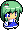
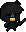
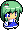
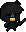
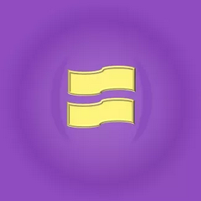

|  |  |
LiveECL v: now with clickable line numbers!
Alt+S: switches focus, Alt+R: restarts the game,
Alt+C: clears all bullets, Alt+F: fullscreen.
... and much more!
|  |  |
LiveECL is an online interface to both a compiler and an interpreter for the Enemy Control Language, otherwise known as ECL. As the scripting language of the Touhou Project, it is used to choreograph the enemies and patterns that appear in all Touhou Project games.
This project is made by and for the community, with the ultimate goal of being a perfectly accurate simulator for ECL scripts to help making modding ("patching") more accessible and more convenient. One of the goals of the project is to enable users to play full Touhou Project stages in the browser, from any device.
LiveECL started in December of 2019 and is lead by Guy L. For any inquiries, bug-reporting or suggestions, you can reach me on Discord @Guy#8081 or through email at g.guy.lab@gmail.com.
LiveECL is still in active development - see the Progress tab for more information.
If you need any help, the Features and Documentation pages are for you.
Modders are still preparing, please wait warmly and have some tea.
Current version:
The basic concept of LiveECL is to enable users to automatically (or manually) compile and run any ECL script they write in the editor. To fully utilize this tool, you must have some understanding of both ECL and of the Touhou series of games. Information and help regarding ECL can be found in Documentation.
Tooltips are there to help you, so do point your cursor if something piques your interest!
The game (or "Interpreter") is meant to be an accurate simulation of Touhou gameplay.
For the most part, shoot, dodge, and don't die. More here.
As usual, the controls are:
Information about more advanced features of the interpreter will appear here once they have been implemented. You are free to chose to play as any character, with any difficulty, in any game. A godmode option is provided for patterns better suited for viewing than playing. May or may not contain easter eggs.
You write, it compiles.
Alternatively, you can change compilation to manual mode by using this button:
Additional options are given for veterans, such as the use of older ECLmaps and the simple compile mode.
You can also set which sub the game should attempt to run first (this defaults to main).
Do note that the LiveECL editor comes pre-packaged with the MERLIN library. Whether or not to use it is up to you. Errors and other debugging information is delivered through the terminal at the bottom. You can use the resize icon in the middle of the page to display (or hide) the three main components as needed.
Even more editor features are accessible through the functionalities below, and more are planned.
Easy-access buttons are provided for various useful features, along with keyboard shortcuts.
Do note that the Alt key should only be pressed when the game is not in focus.
| Button | Shortcut | Name | Description |
|---|---|---|---|
| ( Alt ) + F |
Fullscreen | Attempts to open the game view in fullscreen mode. May not work in popup mode. |
|
| ( Alt ) + E |
External window (Popup Mode) |
Attempts to move the game to a new window. Will create a new instance of the game. Shortcut disabled due to popup-detection risk. See Options. |
|
| ( Alt ) + I |
Internal window | Closes the popup window. Only appears while popup window is open. |
|
| ( Alt ) + C |
Clear bullets | Instantly destroys all enemy bullets. | |
| ( Alt ) + R |
Restart game | Reloads the game. If an unreported crash occurs, please report it! |
|
| ( Alt ) + G |
Godmode | Makes the player invulnerable and hidden. |
| Button | Shortcut | Name | Description |
|---|---|---|---|
| N/A | Down | Scrolls to bottom of page. Mobile only. |
|
| N/A | Up | Scrolls to top of page. Mobile only. |
|
| ( Alt ) + S |
Switch focus | Switches focus from game to editor, or from editor to game. Shortcut only. |
LiveECL is constantly updated with new features: see Progress for upcoming changes! Additional features are also available in the Options page. For more technical information as to how LiveECL came to be and currently works behind the scenes, see this page.
LiveECL is still in active development as it becomes it more accessible, more convenient, and—importantly—more accurate, update after update.
In no particular order, here are some of the main long-term goals we're shooting towards:
Here are some of the main features we're working on right now:
Work in progress.
Work in progress.
Nothing here yet!
Nothing here yet!
Nothing here yet!